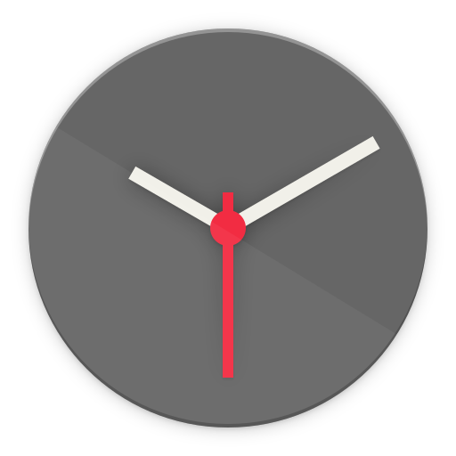
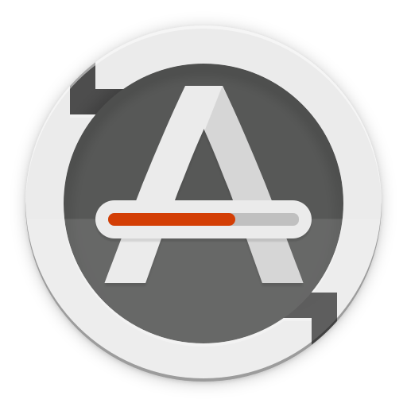
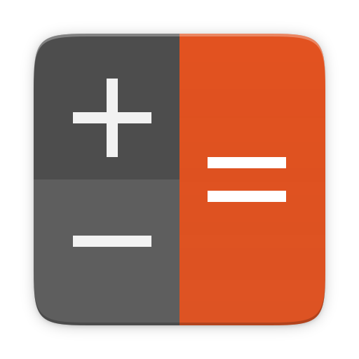
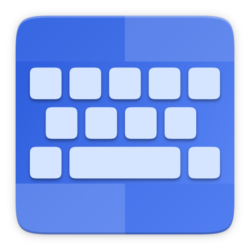
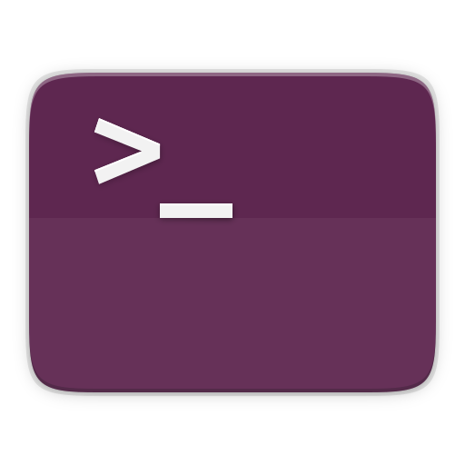
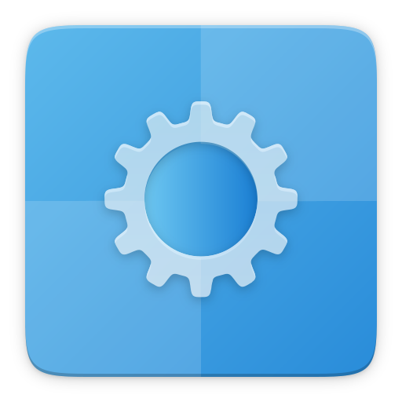

--:--
Ubuntu 25.10
À propos
Rechercher une application
ubuntu

Horloges

Actualiseu...

Calculatrice
Centre de ...
Paramètres
Éditeur de ...
Gestionnai...

Prise en ch...
Ressources
Caractères

Terminal
Utilitaires

Système
Aucune notification
‹
›
Aujourd'hui
Aucun évènement
Ajouter des horloges mondiales…
Choisir un emplacement pour la météo…
100%
Filaire
Mode puissance
Équilibré
Style sombre
Ne pas déranger